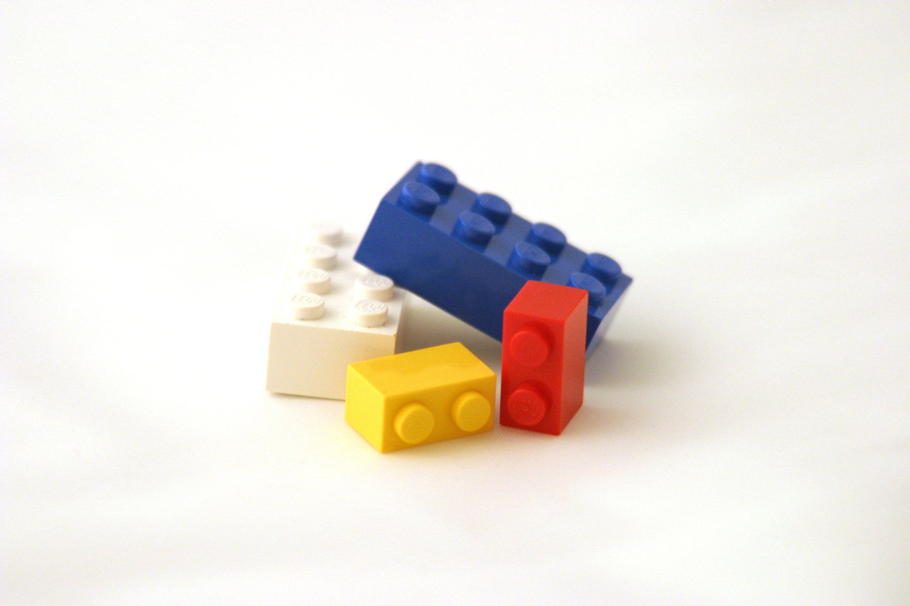

1 + 2[1] 3The breadth and complexity of statistical techniques continues to grow, making it difficult to learn details of all methods. Historically, techniques like analysis of variance (ANOVA) and regression, developed in separate fields, and only later were these techniques integrated into what is now the called the generalized linear model. Since then, multiple additional methods have developed, including those that relax assumptions of earlier methods. Traditional software that provides menus for selecting a specific method were useful when the number of methods were a reasonable size, but the continued development of additional methods make it very difficult to fit all in a reasonably navigable set of menus. The clicking of menus also poses problems for reproducibility. Most of the developing methods, continue to fit nicely into, or are extensions of, the generalized linear model. For example, methods such as machine learning and artificial intelligence build on this generalized linear model.
So, while it may not be as easy to get started learning statistics with a programming language, it will pay of in the long run.
Here are some qualities of menu based statistical programs and statistical programming languages.
R is a statistical programming language, which means it is a programming language designed specifically to do statistics. It is widely used across many fields of science, it is free to use, and you can almost always find an implementation of a method using R. For these reasons, and many more, I teach statistics using R.
The goal of this chapter is to get you up and running with the R statistical programming language and the RStudio integrated development environment.
If you are reading this because you are taking one of my courses, you must decide how you want to use R and RStudio for the course. You have two basic options:
If you have a computer that you will be using consistently for this course, I recommend installing R and RStudio on that computer. Both are free and will be much easier to use if you install them directly on your computer. If you have decided to install the software on your computer you can skip to the following video. Note, that you must be a student within the university, and have DUO setup to use VLab. If you think you want to use the virtual lab, watch this video:
To install R go to www.cran.r-project.org, select the appropriate operating system and follow the instructions to install R. You must have R install to use RStudio, so do this first.
To install R on Windows, click on the “Download R for Windows” link on the CRAN page. On the next page click “base” under the Subdirectories heading. On the next page you will see a link entitled “Download R-4.3.2 For Windows” (or the latest version). Click that link to download R, and install it the way you would most software on Windows. Note, this page is also a good resource if you have problems intalling R.
To install R on Mac, click the “Download R for macOS” link on the CRAN page. You will likely see two links toward the top of the page that look something similar to the following, one for each of the two types of processors available on macOS.
M1 chip:
R-4.3.2-arm64.pkg
Intel:
R-4.3.2.pkg
Select the one appropriate for your computer. If you do not know what type of chip you have, click on the apple icon in the top left corner of your mac and the click “About this Mac”. Under the processor heading you should see a string of characters. If in includes Intel you have an Intel chip, if not, you likely have an M1 chip. Newer computers are more likely to have M1 than older ones.
Here is a video demonstrating the installation of R:
To install RStudio go to www.posit.co and follow the links to download the free desktop version of RStudio.
Here is a video demonstrating the installation of Rstudio:
RStudio is a powerful tool, but it can be a little intimidating at first. The video below is a quick tour of the software:
To help you understand R I describe some basic concepts important to understanding R as a statistical programming language (SPL). Such concepts will hopefully help you organize what you are learning. This is important because you will not be able to memorize all of the things you need to do to use R. But, having some general concepts should help you build a solid foundation of skills. This explanation will be a gross oversimplification of R, but it should be a good starting model you can build later.
An object is a thing that has one or more states, and one or more behaviors. Take for example you cell phone. It has many states, such as on or off, and many behaviors, such as making phone calls, sending texts, or surfing the web. Everything in R is an object. Objects in R are very similar to objects like your cell phone, in that they have states and behaviors. Our goal is to learn how to use these objects to help us do science.
There are basically two types of objects in R: data objects and function objects. Data objects store information, while function objects process or manipulate information.
We use objects in R through expressions. An expression is simply a combination of objects that R can evaluate. So, we type something into R, R processes it and gives us the results. For example, if we type 1 + 2 into the R console, it will give us the result 3:
1 + 2[1] 3So, expressions are simply objects or combinations of objects submitted to R in a way R can evaluate them.


Everything in R is an object
Primitive objects are the simplest elements of a programming language, and include:
They can be thought of as the basic building blocks for everything else in the language.
An expression is an input that the programming language can evaluate, and consists of function and data objects.
Data objects are the primary means of storing information in R. R has a few basic data types:
Numeric -
numeric
int - integers (1,2)num - real number (1.2, -3.1, 200.0)character or string -
character
"Hello world!", "Ten", 'Cat'"This is a sentence, which is a string""10" ( in single or double quotes, as long as they match)Boolean or Logical
logical
TRUE or FALSE (use operators such as or, and and not).FALSE evaluates to zero, and TRUE evaluates to one.TRUE + 1 you will get 2 in return.mode(TRUE)[1] "logical"TRUE + 1[1] 2R uses functions to do all computations. When you open R it loads the base R functions. You can do lots of things with the base R functions. Primitive functions are built into R. Below are some of they types of primitive functions and examples.
+, -, *, /, ^<,>,==, <=, >=, !=TRUE or FALSE&, | ,!TRUE or FALSEmode()length()sum()sqrt()log()exp()<- preferred assignment operator - always use this one= this will also work, but can be confusing (note different from ==, the comparison operator)-> is also an assignment operator, but we will not use it.Expressions must be syntactically valid. This means they must be organized in a way that R understands.
"hi" 5 - not syntactically valid3.2*5 - syntactically validR statements must also be semantically valid. semantics has to do with meaning.
English: “I are hungry” - syntactically valid but semantic error
programming language: - 3 + “hi” - semantic error (you can’t use addition on character strings)
Chomsky: “colorless green ideas sleep furiously”
This statement is syntactically valid, but does not make sense, so makes a semantic error.
In R you have to combine expressions in a way that R “understands” and this combination should be meaningful.
We will often want to save data in a variable. We can do that with assignment, which utilizes an assignment operator.
x <- 2x[1] 2pet <- "dog"pet[1] "dog"Assignments are special expressions that are composed of three parts, a name, an assignment operator, and an expression.
For the following assignment,
x <- 1:10x is the name, <- is the assignment operator, and 1:10 is an expression. Names in R can be anything that includes letters, numbers, a period (.) or an underscore (_), as long as it begins with either a letter or a period. Here are some valid, followed by invalid names
# Valid
IQ
c3p0
Height_inches
weight.lbs
.hidden
# Invalid (you will get an error message)
_cat
1dog
%sales
Height-InchesThere are also some names that cannot be used because they are names of primitive R objects (e.g. if, for, else, in). Type ?reserved in the R console for a complete list.
There are at least two names that can, but should not be used. Namely the letters (T and F) which in R are short for TRUE and FALSE.
T[1] TRUEF[1] FALSEThere are at least three assignment operators, as mentioned above, but it is commonly recommended that you use <-, because it makes clear that you are taking some expression and putting it in an object. So we would say of the assignment of x <- 1:10 that x gets the integers 1 through 10, suggesting that we are putting the integers into the object x.
Just about any expression can be passed to a name with the assignment operator.
A scalar is a single value such as:
1[1] 1or
"cat"[1] "cat"A vector is a one-dimensional series of values. For example, the integers 1 through 5 would be a vector of length 5. In R you can create a vector as follows:
series1_5 <- c(1, 2, 3, 4, 5)Note in R there really are no scalars per se. To R a scalar is a vector of length one.
x <- 4
is.vector(x)[1] TRUEthe is.vector() function tests if an object is a vector. The result lets us know the primitive object 4 is indeed a vector.
length(x)[1] 1And it’s length is one.
Lists are the most complex primitive type of data object. A list is a series of any type of object. For example, we might want to record some personal information.
personalInfo <- list(
name = "Rosalind",
age = 6,
pet_names = c("Sparkles", "Mr. Bingo Clakerson", "scruffy"),
favorite_colors = c("pink", "purple")
)Dataframes are special types of lists, that have the same number of values in each of the series in the list. We will use these very often for data analysis. Each row in a data frame is a different unit and each column is a different variables. So, in a data frame each column has the same number of rows, and each row has the same number of columns.
class_info <- data.frame(
name = c("Rosalind", "Emily", "Drake"),
age = c(6, 7, 5),
height = c(46, 48, 44)
)
class_info name age height
1 Rosalind 6 46
2 Emily 7 48
3 Drake 5 44Notice that the data frame class_info is an object that contains other objects. If we want to use one of the objects inside a data frame we can do so by letting R know where to find that object using the $ operator. So, if we wanted to see the ages in the class_info data frame we could do so by:
class_info$age[1] 6 7 5c(){}cbind()
rbind()name <- function(arg_1, arg_2, ...) {
expression_1
expression_2
...
output <- expression_3
return(output)
}Below I give links to R resources if you desire to learn more about R.
A good next step is Roger Peng’s book R Programming for Data Science, which can be read free online at https://bookdown.org/rdpeng/rprogdatascience/. You can also download a pdf or epub of the book at https://leanpub.com/rprogramming. Both these links also have links to purchase a printed copy if that works better for you.